Mostrar código R
x<-c(3,6,7,10,15); cat("Me =", median(x)) # 7Me = 7Mostrar código R
x2<-c(3,6,10,15); cat("Me =", median(x2)) # 8Me = 8Tema I (Parte II) — Medidas de Posición, Dispersión, Forma y Aplicación Práctica
Dpto. Estadística e Investigación Operativa, Universidad de Granada
2026-01-01
Tendencia central: Media (\(\bar{x}\)), Mediana (\(Me\)), Moda
No central: Percentiles (\(P_\alpha\)), Cuartiles (\(Q_1,Q_2,Q_3\)), Deciles
Qué medida según tipo de variable:
| Tipo | Medidas |
|---|---|
| Nominal | Proporción, Moda |
| Ordinal | + Mediana, Percentiles, RIQ |
| Cuantitativa | + Media, Varianza, DT, CV |
Importante
¡No se puede calcular la media de una variable nominal!
Tip
Consejo para el estudiante: Para recordar qué medida usar: ¿tipo de variable? Nominal → solo moda y %. Ordinal → añade mediana. Cuantitativa → añade media. ¿Hay outliers? → prefiere mediana y RIQ sobre media y DT.
Proporción: \(p_i = n_i/n\) — frecuencia relativa. Para nominales.
Moda: valor con mayor frecuencia (puede no ser única). Única medida central para nominales.
Mediana (\(Me\)): valor que divide la muestra ordenada en dos partes iguales.
Ejemplo ordinal: {peor, peor, peor, mejor, igual, mejor, peor} → ordenar por gravedad → \(Me\) = “peor”
\[\bar{x} = \frac{1}{n}\sum_{i=1}^{n} x_i\]
Para datos agrupados (tabla de frecuencias): \(\bar{x} = \frac{\sum x_i \cdot n_i}{n}\)
Para intervalos: usar la marca de clase \(x_j = (x_j^l + x_j^u)/2\)
Ejemplo — Edad (n=124):
| \(x_i\) | \(n_i\) | \(x_i \cdot n_i\) |
|---|---|---|
| 15 | 5 | 75 |
| 16 | 28 | 448 |
| 17 | 64 | 1088 |
| 18 | 18 | 324 |
| 19 | 6 | 114 |
| 20 | 3 | 60 |
| Σ | 124 | 2109 |
\(\bar{x} = 2109/124 = 17.0\) años
\[\bar{x}_p = \frac{\sum x_i \cdot w_i}{\sum w_i}\]
Ejemplo — Nota media: 5 (3 créditos), 7 (3 créd), 9 (6 créd).
\(\bar{x}_p = \frac{5\times3 + 7\times3 + 9\times6}{12} = 7.5 \; \neq \; \frac{5+7+9}{3} = 7.0\)
Goniometría de rodilla
Las medidas de posición resumen dónde se concentran los datos. La media es sensible a valores extremos; la mediana es robusta.
Media Geométrica: \(G = \left(\prod_{i=1}^n x_i\right)^{1/n} = \exp\left(\frac{1}{n}\sum \ln x_i\right)\)
Media Armónica: \(H = \frac{n}{\sum_{i=1}^n \frac{1}{x_i}}\)
¿Cuándo usar cada una en fisioterapia?
Media geométrica = 1.465
Media armónica = 0.96 m/s
Media aritmética = 1 m/s (sobreestima!)Nota
Media Geométrica (\(G\)): Adecuada para datos que siguen un crecimiento multiplicativo (proporciones, ratios, tasas de cambio). Se define como:
\[G = \left(\prod_{i=1}^{n} x_i\right)^{1/n} = \exp\left(\frac{1}{n}\sum_{i=1}^{n} \ln x_i\right)\]
Media Armónica (\(H\)): Adecuada para promediar tasas, velocidades y ratios inversos:
\[H = \frac{n}{\sum_{i=1}^{n} \frac{1}{x_i}}\]
Relación fundamental: Para datos positivos siempre se cumple \(H \leq G \leq \bar{x}\).
| Media | Cuándo usar en Fisioterapia | Ejemplo |
|---|---|---|
| Aritmética (\(\bar{x}\)) | Variables aditivas | ROM, fuerza, distancia |
| Geométrica (\(G\)) | Ratios, cocientes pre/post, índices multiplicativos | Ratio de mejoría (ROM post / ROM pre) |
| Armónica (\(H\)) | Velocidades, tasas, frecuencias | Velocidad de marcha en diferentes tramos |
# Ejemplo: ratios de mejoría pre/post en 5 pacientes
ratios <- c(1.2, 1.5, 1.1, 1.8, 1.3) # ROM_post / ROM_pre
media_arit <- mean(ratios)
media_geom <- exp(mean(log(ratios)))
media_armo <- 1 / mean(1 / ratios)
cat("Ratios de mejoría:", ratios,
"\n\nMedia aritmética =", round(media_arit, 3),
"\nMedia geométrica =", round(media_geom, 3),
"\nMedia armónica =", round(media_armo, 3),
"\n\nSe cumple H ≤ G ≤ x̄:", media_armo <= media_geom & media_geom <= media_arit)Ratios de mejoría: 1.2 1.5 1.1 1.8 1.3
Media aritmética = 1.38
Media geométrica = 1.359
Media armónica = 1.339
Se cumple H ≤ G ≤ x̄: TRUETip
En fisioterapia: Cuando comparas la mejoría relativa de varios pacientes (ej: “el ROM mejoró un 20%, 50%, 10%…”), la media geométrica es más apropiada que la aritmética. La aritmética sobrestima el promedio de cambios multiplicativos.
Importante
Regla nemotécnica (rule of thumb): La posición relativa de media, mediana y moda revela la asimetría.
Simétrica \[\bar{x} \approx Me \approx Mo\] Las tres coinciden en el centro
Asim. derecha (+) \[Mo < Me < \bar{x}\] La media es arrastrada por la cola larga a la derecha
Asim. izquierda (−) \[\bar{x} < Me < Mo\] La media es arrastrada por la cola larga a la izquierda
par(mfrow=c(1,3), mar=c(3,4,4,1))
set.seed(123)
# ── Simétrica ──
x_sym <- rnorm(5000, 10, 1.5)
hist(x_sym, col="steelblue", border="white", breaks=30, freq=FALSE,
main="Simétrica", xlab="", ylab="", yaxt="n", cex.main=1.3)
dx <- density(x_sym); lines(dx, col="darkgreen", lwd=2.5)
abline(v=mean(x_sym), col="darkgreen", lwd=3) # media = rojo
abline(v=median(x_sym), col="#2471a3", lwd=3, lty=2) # mediana = azul
legend("topright", c(paste0("x̄=", round(mean(x_sym),1)),
paste0("Me=", round(median(x_sym),1))),
col=c("darkgreen","#2471a3"), lty=c(1,2), lwd=3, bty="n", cex=0.85)
text(9.5, max(dx$y)*0.85, "x̄ ≈ Me ≈ Mo", col="darkgreen", font=2, cex=0.9)
# ── Asimétrica derecha ──
x_pos <- rexp(5000, 0.5)
hist(x_pos, col="seagreen", border="white", breaks=30, freq=FALSE,
main="Asim. derecha (+)", xlab="", ylab="", yaxt="n", cex.main=1.3)
dx <- density(x_pos); lines(dx, col="darkgreen", lwd=2.5)
abline(v=mean(x_pos), col="darkgreen", lwd=3)
abline(v=median(x_pos), col="#2471a3", lwd=3, lty=2)
legend("topright", c(paste0("x̄=", round(mean(x_pos),1)),
paste0("Me=", round(median(x_pos),1))),
col=c("darkgreen","#2471a3"), lty=c(1,2), lwd=3, bty="n", cex=0.85)
text(8, max(dx$y)*0.85, "Mo < Me < x̄", col="darkgreen", font=2, cex=0.9)
# ── Asimétrica izquierda ──
x_neg <- 12 - rexp(5000, 0.5)
hist(x_neg, col="seagreen", border="white", breaks=30, freq=FALSE,
main="Asim. izquierda (−)", xlab="", ylab="", yaxt="n", cex.main=1.3)
dx <- density(x_neg); lines(dx, col="darkgreen", lwd=2.5)
abline(v=mean(x_neg), col="darkgreen", lwd=3)
abline(v=median(x_neg), col="#2471a3", lwd=3, lty=2)
legend("topleft", c(paste0("x̄=", round(mean(x_neg),1)),
paste0("Me=", round(median(x_neg),1))),
col=c("darkgreen","#2471a3"), lty=c(1,2), lwd=3, bty="n", cex=0.85)
text(5, max(dx$y)*0.85, "x̄ < Me < Mo", col="darkgreen", font=2, cex=0.9)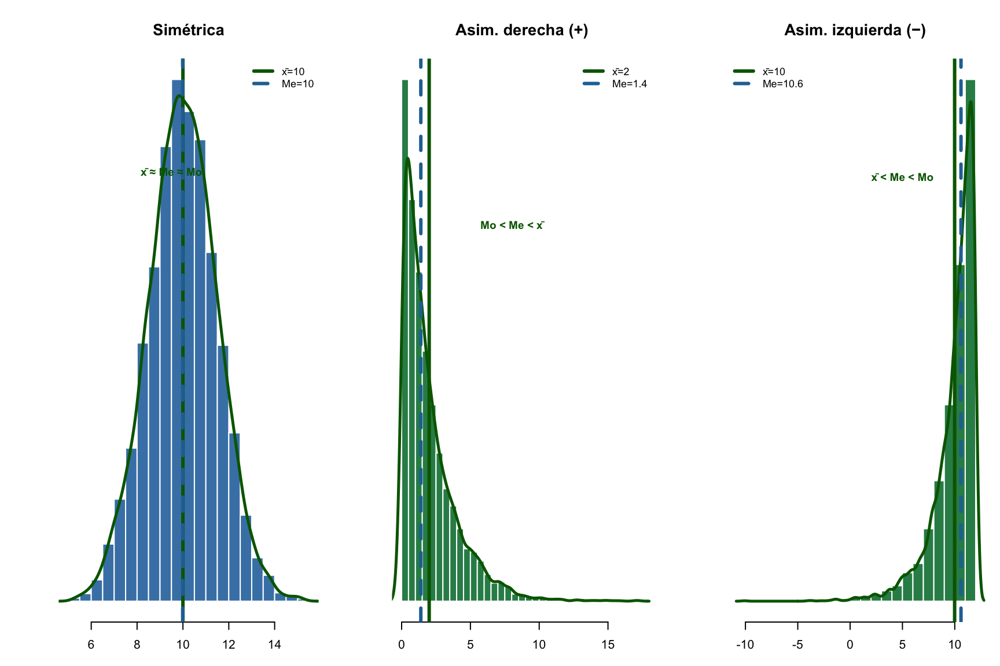
Tip
Cómo usarlo en fisioterapia: Si en tu muestra la media de EVA-dolor es 6.2 y la mediana es 4.5, tienes una asimetría derecha: la mayoría de pacientes tiene dolor moderado-bajo, pero unos pocos con dolor muy alto empujan la media hacia arriba. En este caso, reporta la mediana.
Tip
Piensa antes de mirar: Tienes 30 pacientes con fuerza prensil entre 24-38 kg. Uno adicional registra 65 kg. ¿La media cambiará mucho? ¿Y la mediana? ¿Cuál reportarías en tu artículo? → Mira los gráficos de abajo para comprobarlo.
set.seed(123)
par(mfrow=c(1,2), mar=c(4,4,4,1))
# Sin outlier
x1 <- rnorm(30, 30, 5)
hist(x1, col="steelblue", border="white", breaks=12, freq=FALSE,
main="Sin outliers: media ~ mediana", xlab="Fuerza (kg)", xlim=c(15,65))
abline(v=mean(x1), col="darkgreen", lwd=3)
abline(v=median(x1), col="steelblue", lwd=3, lty=2)
curve(dnorm(x,mean(x1),sd(x1)), add=T, col="grey40", lwd=1, lty=3)
legend("topright", c(paste("Media =",round(mean(x1),1)),
paste("Mediana =",round(median(x1),1))), col=c("darkgreen","steelblue"),
lty=c(1,2), lwd=3, bty="n", cex=0.9)
# Con outlier
x2 <- c(x1, 65) # paciente con fuerza excepcional
hist(x2, col="seagreen", border="white", breaks=12, freq=FALSE,
main="Con outlier: media se desplaza", xlab="Fuerza (kg)", xlim=c(15,65))
abline(v=mean(x2), col="darkgreen", lwd=3)
abline(v=median(x2), col="steelblue", lwd=3, lty=2)
legend("topright", c(paste("Media =",round(mean(x2),1)),
paste("Mediana =",round(median(x2),1))), col=c("darkgreen","steelblue"),
lty=c(1,2), lwd=3, bty="n", cex=0.9)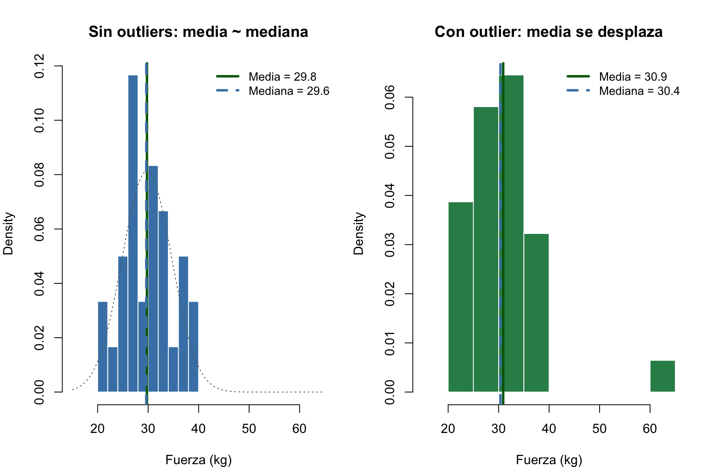
Tip
Consejo: Ante datos con valores extremos (outliers), prefiere la mediana sobre la media. La mediana apenas cambia. La media se ve muy afectada. En fisioterapia, un paciente con dolor excepcionalmente alto no debe distorsionar la descripción del grupo.
Percentil \(\alpha\): valor que deja \(\alpha\)% de observaciones por debajo. Posición = \((n+1)\alpha/100\).
Cuartiles: \(Q_1=P_{25}\), \(Q_2=P_{50}=Me\), \(Q_3=P_{75}\). Deciles: \(D_k = P_{10k}\).
Ejemplo — \(P_{40}\) (nº recaídas, n=500):
| \(x_i\) | \(n_i\) | \(N_i\) | % acum |
|---|---|---|---|
| 0 | 72 | 72 | 14.4 |
| 1 | 155 | 227 | 45.4 |
| 2 | 97 | 324 | 64.8 |
Posición \(P_{40}\) = \((500+1) \times 0.4 = 200.4\) → \(P_{40} = 1\) recaída
Flexión de rodilla (°), n=60:
| Intervalo | \(x_j\) | \(n_i\) | \(N_i\) |
|---|---|---|---|
| 110–120 | 115 | 5 | 5 |
| 120–130 | 125 | 15 | 20 |
| 130–140 | 135 | 25 | 45 ← contiene Me |
| 140–150 | 145 | 10 | 55 |
| 150–160 | 155 | 5 | 60 |
\[Me = L_{i-1} + \frac{n/2 - N_{i-1}}{n_i} \cdot a = 130 + \frac{30-20}{25} \times 10 = 134°\]
Calcula \(Q_1\), \(Q_2\), \(Q_3\) para: 3, 5, 7, 8, 12, 15, 18, 21
Tip
Solución: Ordenados: 3, 5, 7, 8, 12, 15, 18, 21 (\(n=8\), par)
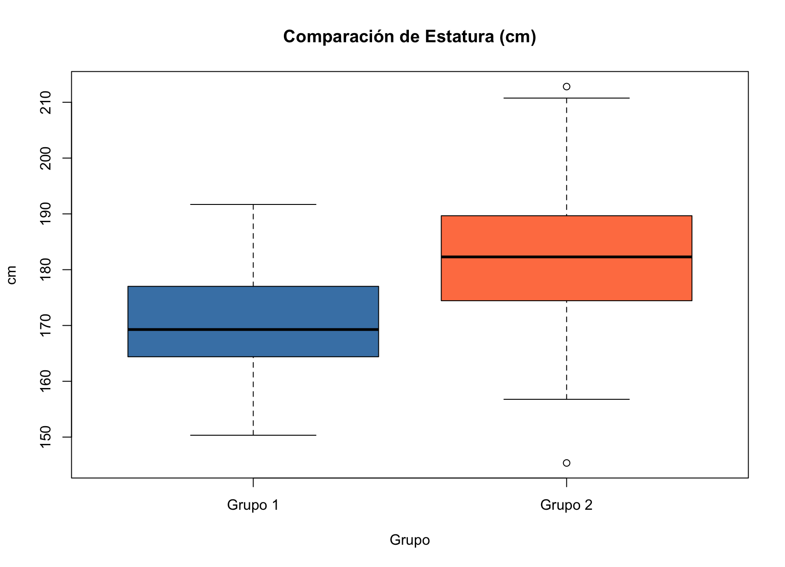
Caja: \(Q_1\) a \(Q_3\) (50% central). Línea: \(Me\). Bigotes: \(1.5 \times RIQ\). Puntos: outliers.
Dos grupos pueden tener la misma media pero dispersión muy diferente. La media sola no describe la distribución.
set.seed(123); n<-10000; mu<-90
grpA<-rnorm(n,mu,5); grpB<-rnorm(n,mu,18)
plot(density(grpA,adjust=1.5),col="steelblue",lwd=4,xlim=c(30,150),
main=expression(paste("Misma ",mu,"=90°, distinta ",sigma)),xlab="Flexión rodilla (°)")
lines(density(grpB,adjust=1.5),col="seagreen",lwd=4); abline(v=mu,lty=2,lwd=2)
arrows(mu-10,0.01,mu+10,0.01,col="steelblue",lwd=3,code=3,angle=90,length=0.12)
arrows(mu-36,0.005,mu+36,0.005,col="seagreen",lwd=3,code=3,angle=90,length=0.12)
legend("topright",c(expression(sigma==5),expression(sigma==18)),col=c("steelblue","seagreen"),lwd=4,bty="n",cex=1.3)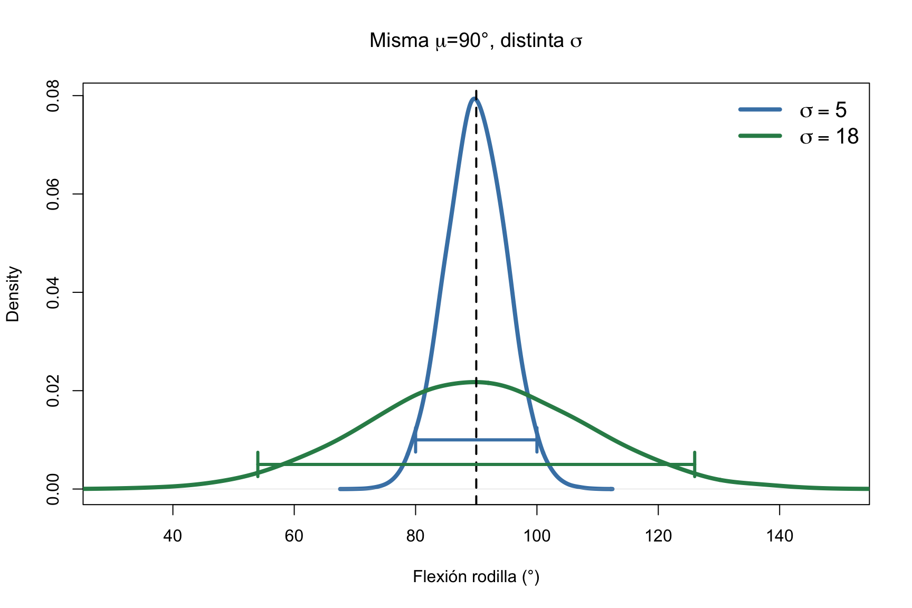
Grupo A: \(s=5°\), \(s^2=25\). Grupo B: \(s=18°\), \(s^2=324\). Misma media, variabilidad 13 veces mayor.
Rango: \(A = x_{\max} - x_{\min}\). Simple pero muy pobre (solo usa 2 valores).
Varianza muestral: \(s^2 = \frac{\sum_{i=1}^{n} (x_i - \bar{x})^2}{n-1}\)
Desviación típica: \(s = \sqrt{s^2}\) (mismas unidades que la variable)
Fórmula abreviada: \(s^2 = \frac{1}{n-1}\left[\sum x_i^2 - \frac{(\sum x_i)^2}{n}\right]\)
¿Por qué \(n-1\)? Usamos \(n-1\) porque al estimar \(\bar{x}\) a partir de los mismos datos, “gastamos” un grado de libertad. Esto garantiza que \(s^2\) sea un estimador insesgado de \(\sigma^2\).
Flexión de rodilla (°) en 5 pacientes: 125, 132, 128, 135, 130. \(\bar{x}=130°\).
| \(x_i\) | \(x_i-\bar{x}\) | \((x_i-\bar{x})^2\) |
|---|---|---|
| 125 | −5 | 25 |
| 132 | +2 | 4 |
| 128 | −2 | 4 |
| 135 | +5 | 25 |
| 130 | 0 | 0 |
| Σ | 0 | 58 |
\[s^2 = \frac{58}{4} = 14.5 \text{ grados}^2 \qquad s = \sqrt{14.5} = 3.81°\]
Se expresa \(\bar{x} \pm s\). Si la distribución es simétrica (≈Normal):
curve(dnorm(x), -4, 4, lwd=3, col="steelblue", main=expression(bar(x) %+-% 2*s))
x1<-seq(-2,2,0.01); polygon(c(x1,rev(x1)),c(dnorm(x1),rep(0,length(x1))),col=rgb(0,0,1,0.2),border=NA)
x2<-seq(-1,1,0.01); polygon(c(x2,rev(x2)),c(dnorm(x2),rep(0,length(x2))),col=rgb(0,0,1,0.15),border=NA)
text(0,0.2,"~68%",cex=1); text(0,0.05,"~95%",cex=1)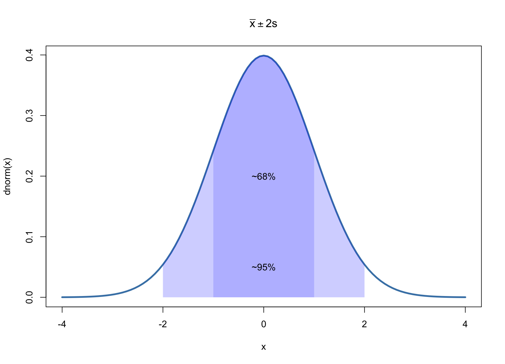
Cuando los datos están agrupados en \(k\) intervalos, las fórmulas de la media y la varianza se adaptan usando la marca de clase \(x_j\) como representante del intervalo:
Media desde tabla agrupada: \[\bar{x} = \frac{1}{n}\sum_{j=1}^{k} x_j \cdot n_j = \sum_{j=1}^{k} x_j \cdot f_j\]
Varianza desde tabla agrupada (fórmula abreviada de cálculo): \[s^2 = \frac{1}{n-1}\left[ \sum_{j=1}^{k} x_j^2 \cdot n_j - \frac{\left( \sum_{j=1}^{k} x_j \cdot n_j \right)^2}{n} \right]\]
Relación con las fórmulas para datos sin agrupar:
Flexión de rodilla (grados) en 60 pacientes de fisioterapia:
| Intervalo | Marca de clase (\(x_j\)) | \(n_j\) | \(x_j \cdot n_j\) | \(x_j^2 \cdot n_j\) |
|---|---|---|---|---|
| 110-120 | 115 | 5 | 575 | 66,125 |
| 120-130 | 125 | 15 | 1,875 | 234,375 |
| 130-140 | 135 | 25 | 3,375 | 455,625 |
| 140-150 | 145 | 10 | 1,450 | 210,250 |
| 150-160 | 155 | 5 | 775 | 120,125 |
| Total | 60 | 8,050 | 1,086,500 |
\[\bar{x} = \frac{\sum x_j \cdot n_j}{n} = \frac{8050}{60} = 134.2°\]
\[s^2 = \frac{1}{n-1}\left[\sum x_j^2 n_j - \frac{(\sum x_j n_j)^2}{n}\right] = \frac{1}{59}\left[1,086,500 - \frac{8,050^2}{60}\right] = \frac{6,458}{59} = 109.5\]
\[s = \sqrt{109.5} = 10.5°\]
Media = 134.1667 grados | s = 10.5 grados | s2 = 109.5Nota: La media con datos agrupados (134.2°) es una aproximación. Asume que todas las observaciones se concentran en la marca de clase.
CV — Definición clínica: mide la dispersión relativa respecto a la media. Es adimensional (sin unidades), lo que permite comparar la variabilidad entre variables medidas en escalas completamente distintas.
\[CV = \frac{s}{\bar{x}} \times 100\%\]
Usos clínicos del CV:
| Método medición ROM | \(\bar{x}\) | \(s\) | CV | Interpretación |
|---|---|---|---|---|
| Goniometría digital | 150° | 3° | 2.0% | Excelente — gold standard |
| Goniometría manual | 148° | 7.5° | 5.1% | Aceptable — práctica clínica |
| Estimación visual | 145° | 14.5° | 10.0% | Poco preciso — no usar solo |
RIQ — Rango Intercuartílico: \(RIQ = Q_3 - Q_1\). Contiene el 50% central de los datos. Robusto frente a outliers; es el acompañante natural de la mediana.
Desviación cuartil: \(DQ = RIQ/2\) — mide la dispersión alrededor de la mediana.
Asimetría (skewness) — \(g_1\): mide la falta de simetría de la distribución.
\[g_1 = \frac{\frac{1}{n}\sum(x_i-\bar{x})^3}{s^3}\]
| \(g_1\) | Forma | Ejemplo en Fisioterapia |
|---|---|---|
| \(\approx 0\) | Simétrica | ROM de cadera en población sana |
| \(> 0\) | Cola a la derecha (+) | Días hasta el alta (la mayoría temprano, pocos tardan mucho) |
| \(< 0\) | Cola a la izquierda (−) | Fuerza en pacientes con lesión (la mayoría baja, pocos alta) |
Interpretación clínica: si \(g_1 > 0\), la media \(>\) mediana (arrastrada por valores altos). Si \(g_1 < 0\), media \(<\) mediana.
Curtosis (kurtosis) — \(g_2\): mide el apuntamiento y el peso de las colas.
\[g_2 = \frac{\frac{1}{n}\sum(x_i-\bar{x})^4}{s^4}\]
| Exc. \(g_2-3\) | Nombre | Significado clínico |
|---|---|---|
| \(\approx 0\) | Mesocúrtica | Distribución Normal de referencia |
| \(> 0\) | Leptocúrtica | Colas pesadas → más valores extremos de lo esperado (ej: dolor crónico: la mayoría moderado pero algunos muy extremos) |
| \(< 0\) | Platicúrtica | Colas ligeras → pocos valores extremos (ej: ROM en muestra muy homogénea) |
Nota: \(g_2\) es la curtosis; el exceso de curtosis (excess kurtosis) es \(g_2 - 3\).
par(mfrow=c(1,2), mar=c(4,4,3,1), bg="white")
# ── Panel 1: Asimetría con valores numéricos ──
set.seed(123)
x_sym <- rnorm(1000, 90, 15)
x_pos <- rexp(1000, rate=1/10)
x_neg <- -rexp(1000, rate=1/8) + 40
# Calcular asimetría
g1_sym <- round(mean((x_sym-mean(x_sym))^3)/sd(x_sym)^3, 2)
g1_pos <- round(mean((x_pos-mean(x_pos))^3)/sd(x_pos)^3, 2)
g1_neg <- round(mean((x_neg-mean(x_neg))^3)/sd(x_neg)^3, 2)
xlim_asim <- range(density(x_sym)$x, density(x_pos)$x, density(x_neg)$x)
ylim_asim <- range(density(x_sym)$y, density(x_pos)$y, density(x_neg)$y)
plot(density(x_sym), col="steelblue", lwd=3, main="Asimetría (Skewness)",
xlab="Valor", ylab="Densidad", xlim=xlim_asim, ylim=c(0, ylim_asim[2]*1.1))
lines(density(x_pos), col="seagreen", lwd=3)
lines(density(x_neg), col="coral", lwd=3)
# Añadir medias como referencia
abline(v=mean(x_sym), col="steelblue", lty=2, lwd=1.2)
abline(v=mean(x_pos), col="seagreen", lty=2, lwd=1.2)
abline(v=mean(x_neg), col="coral", lty=2, lwd=1.2)
legend("topright",
c(paste0("Simétrica (g₁=",g1_sym,")"),
paste0("Positiva (g₁=",g1_pos,")"),
paste0("Negativa (g₁=",g1_neg,")")),
col=c("steelblue","seagreen","coral"), lwd=3, bty="n", cex=0.7)
# ── Panel 2: Curtosis con valores numéricos ──
dx <- density(rt(100000, 4), adjust=1.2, from=-5, to=5)
dy <- density(rnorm(100000), adjust=1.2, from=-5, to=5)
dz <- density(runif(100000, -2, 2), adjust=1.2, from=-5, to=5)
# Calcular exceso de curtosis
g2_lepto <- round(mean((rt(100000,4)-0)^4)/1^4 - 3, 1)
g2_meso <- round(mean((rnorm(100000,0,1)-0)^4)/1^4 - 3, 1)
g2_plati <- round(mean((runif(100000,-2,2)-0)^4)/((2-(-2))^2/12) - 3, 1)
plot(dx, col="coral", lwd=3, ylim=c(0, max(dx$y,dy$y,dz$y)*1.15),
main="Curtosis (Exceso de curtosis)", xlab="Valor estandarizado", ylab="Densidad")
lines(dy, col="steelblue", lwd=3)
lines(dz, col="seagreen", lwd=3)
legend("topright",
c(paste0("Leptocúrtica (exc=", g2_lepto, ")"),
paste0("Mesocúrtica (exc=", g2_meso, ")"),
paste0("Platicúrtica (exc=", g2_plati, ")")),
col=c("coral","steelblue","seagreen"), lwd=3, bty="n", cex=0.7)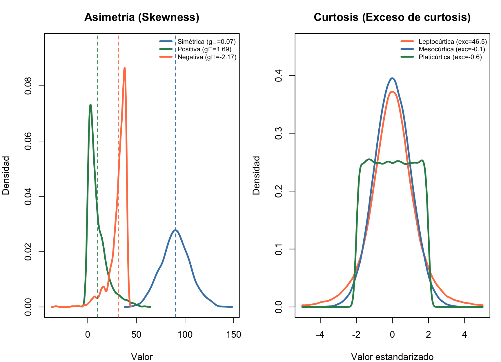
Nota
ECDF (Empirical Cumulative Distribution Function): describe la proporción de datos \(\leq\) cada valor observado. Es el equivalente muestral de la función de distribución \(F(x) = P(X \leq x)\).
\[F_n(x) = \frac{1}{n}\sum_{i=1}^{n} \mathbb{1}_{\{x_i \leq x\}} = \begin{cases} 0 & x < x_{(1)} \\ i/n & x_{(i)} \leq x < x_{(i+1)} \\ 1 & x \geq x_{(n)} \end{cases}\]
donde \(\mathbb{1}_{\{x_i \leq x\}}\) vale 1 si \(x_i \leq x\) y 0 en caso contrario.
Utilidad clínica de la ECDF:
pas<-c(120,125,118,130,122,128,115,135,124,129)
plot(ecdf(pas), main="ECDF: Presión Arterial Sistólica (n=10)",
xlab="PAS (mmHg)", ylab="F(x) — Proporción acumulada",
col="steelblue", verticals=TRUE, pch=16, lwd=2.5, cex.main=1.1)
grid(col="grey80")
# Añadir percentiles clave
abline(h=c(0.25,0.5,0.75), col=c("darkgreen","coral","darkgreen"), lty=3, lwd=1.5)
text(138, 0.52, "Me = 124", col="coral", cex=0.8, font=2)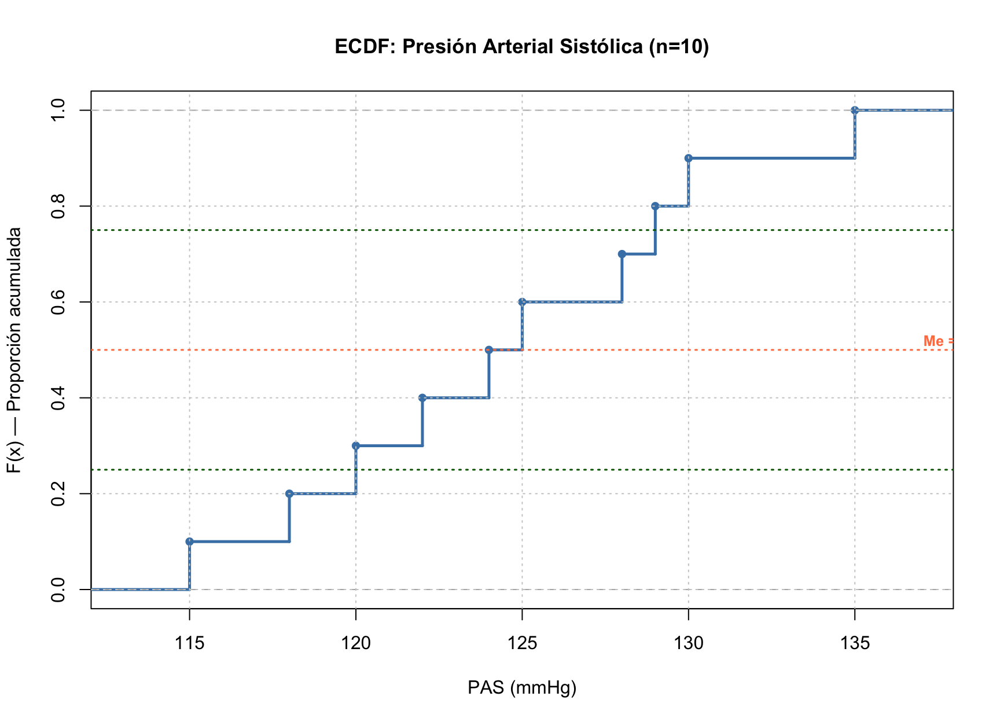
Ejemplo: flexión de rodilla (°) en 8 pacientes: 125, 132, 128, 135, 130, 126, 131, 129
n = 8
Media = 129.5 °
Mediana = 129.5 °
Mínimo = 125 °
Máximo = 135 °
Q1 = 127.5 °
Q3 = 131.25 °
Varianza = 10.57 grados²
Desv. típica = 3.25 °
RIQ = 3.75 °
CV (%) = 2.5 %
Asimetría = 0.175
Curtosis = -1.295
Shapiro-Wilk: W = 0.983 , P = 0.9774# Visualización completa
par(mfrow=c(2,2), mar=c(4,4,3,1))
hist(x, col="steelblue", border="white", breaks=6, freq=FALSE,
main=paste0("ROM (n=", length(x), ")"), xlab="Grados")
curve(dnorm(x, mean(x), sd(x)), add=TRUE, col="darkgreen", lwd=2.5)
boxplot(x, col="seagreen", horizontal=TRUE, main="Boxplot", xlab="Grados")
qqnorm(x, col="steelblue", pch=19, main="Q-Q Plot"); qqline(x, col="coral", lwd=2)
plot(density(x), col="steelblue", lwd=2.5, main="Densidad", xlab="Grados")
polygon(density(x), col=rgb(0,0,0.5,0.15), border="steelblue")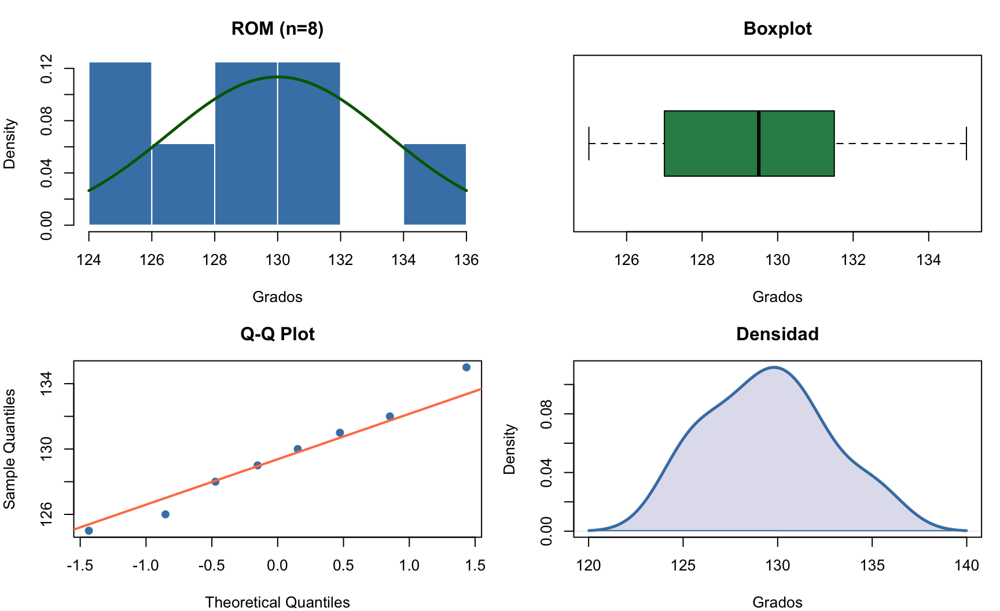
Interpretación de la salida: \(n=8\), \(\bar{x}=129.5°\), \(s=3.2°\), \(Me=129.5°\), \(CV=2.5\%\) (muy homogéneo), \(RIQ=4.5°\), asimetría \(\approx 0\) (simétrica), Shapiro-Wilk \(P > 0.05\) (compatible con normalidad).
| Tarea | R Base | BioEstatR |
|---|---|---|
| Todos los estadísticos | mean(), sd(), median(), IQR(), etc. |
freq(x) |
| Tabla de frecuencias | table(x); prop.table(table(x)) |
freq(x) |
| Tabla agrupada en \(k\) intervalos | cut(x, breaks=k) + table() |
freq(x, cuts=k) |
| Gráficos por grupo | boxplot(y ~ g) |
grps(x = y, f = g) |
| Test de normalidad + Q-Q plot | shapiro.test(x); qqnorm(x) |
testnormal(x) |
| Resumen de 5 números | summary(x) |
freq(x) |
# ── Datos de ejemplo ──
x <- c(125, 132, 128, 135, 130, 126, 131, 129) # ROM rodilla (°)
grupo <- factor(c(rep("Control", 4), rep("Tratamiento", 4)))
y <- c(140, 145, 138, 142, 120, 125, 118, 122) # ROM 2° grupo
# ── BioEstatR (atajos) ──
if (has_bioestatr) {
library(BioEstatR)
freq(x) # todo en uno: n, media, DE, CV, Me, Q1, Q3, min, max, asimetría, curtosis, Shapiro-Wilk
freq(x, cuts = 5) # igual pero agrupando en 5 intervalos
grps(x = y, f = grupo) # boxplots + resumen por grupo
testnormal(x) # Shapiro-Wilk + histograma + Q-Q plot
}
# ── R base (equivalente completo) ──
mean(x); sd(x); median(x); IQR(x); quantile(x, c(0.25, 0.75))
shapiro.test(x)
boxplot(y ~ grupo)
hist(x, freq = FALSE); lines(density(x), col = "steelblue", lwd = 2)set.seed(456)
rom_ejemplo <- round(rnorm(40, mean = 108, sd = 14), 1)
if (has_bioestatr) {
# Si BioEstatR está disponible, usar sus funciones
cat("=== Usando BioEstatR ===\n")
freq(rom_ejemplo)
} else {
# Fallback completo con R base
cat("=== R Base (BioEstatR no disponible) ===\n")
cat("n =", length(rom_ejemplo),
"| Media =", round(mean(rom_ejemplo), 1),
"| DT =", round(sd(rom_ejemplo), 1),
"\nMediana =", round(median(rom_ejemplo), 1),
"| Q1 =", round(quantile(rom_ejemplo, 0.25), 1),
"| Q3 =", round(quantile(rom_ejemplo, 0.75), 1),
"\nRIQ =", round(IQR(rom_ejemplo), 1),
"| CV =", round(sd(rom_ejemplo)/mean(rom_ejemplo)*100, 1), "%",
"\nMín =", min(rom_ejemplo),
"| Máx =", max(rom_ejemplo))
sw <- shapiro.test(rom_ejemplo)
cat("\nShapiro-Wilk: W =", round(sw$statistic, 3),
" P =", round(sw$p.value, 4), "\n")
}=== Usando BioEstatR ===
Distribución de frecuencias
--------------------------------
Variable: rom_ejemplo
n = 40
x Freq Prop Prop.Acum
1 (80,90] 5 0.125 0.125
2 (90,100] 5 0.125 0.250
3 (100,110] 10 0.250 0.500
4 (110,120] 8 0.200 0.700
5 (120,130] 6 0.150 0.850
6 (130,140] 5 0.125 0.975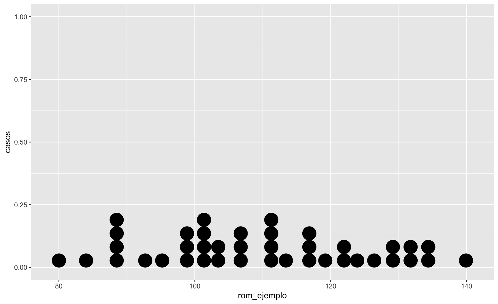
Un fisioterapeuta mide el rango de movimiento (ROM, en grados) de rodilla en 40 pacientes tras una artroplastia total de rodilla.
[1] 89.2 116.7 119.2 88.6 98.0 103.5 117.7 111.5 122.1 116.0 95.2 126.4
[13] 121.8 131.2 87.8 135.3 132.3 113.4 139.9 129.5 101.4 84.0 88.0 110.9
[25] 107.5 123.9 101.5 103.4 128.8 92.7 100.6 99.7 80.0 112.1 110.4 133.4
[37] 98.8 106.0 102.1 107.5freq(rom, cuts=5)=== FRECUENCIAS (5 intervalos) ===
(79.9,92] (92,104] (104,116] (116,128] (128,140]
6 11 8 8 7
=== ESTADÍSTICOS ===cat("n =", length(rom), " | Media =", round(mean(rom),1), "° | Mediana =", round(median(rom),1),
"°\nDT =", round(sd(rom),1), "° | CV =", round(sd(rom)/mean(rom)*100,1),
"% | RIQ =", round(IQR(rom),1), "°\nQ1 =", round(quantile(rom,0.25),1),
"° | Q3 =", round(quantile(rom,0.75),1), "° | Mín =", min(rom),
"° | Máx =", max(rom), "°\n")n = 40 | Media = 109.7 ° | Mediana = 109 °
DT = 15.6 ° | CV = 14.2 % | RIQ = 22.4 °
Q1 = 99.5 ° | Q3 = 121.9 ° | Mín = 80 ° | Máx = 139.9 °Asimetría = 0.07 | Curtosis = -1 Shapiro-Wilk: W = 0.977 P = 0.5888 → Normalidad compatiblerom <- rom_rodilla
par(mfrow=c(1,2), mar=c(4,4,3,1))
hist(rom, col="steelblue", border="white", breaks=8,
main="ROM de Rodilla (n=40)", xlab="Grados", ylab="Frecuencia")
abline(v=mean(rom), col="darkgreen", lwd=3, lty=2)
abline(v=median(rom), col="steelblue", lwd=2, lty=3)
legend("topright", c(paste("Media =", round(mean(rom),1)),
paste("Mediana =", round(median(rom),1))),
col=c("darkgreen","steelblue"), lty=c(2,3), lwd=c(3,2), bty="n", cex=0.8)
boxplot(rom, col="steelblue", main="Boxplot — ROM de Rodilla",
ylab="Grados", ylim=c(70,140))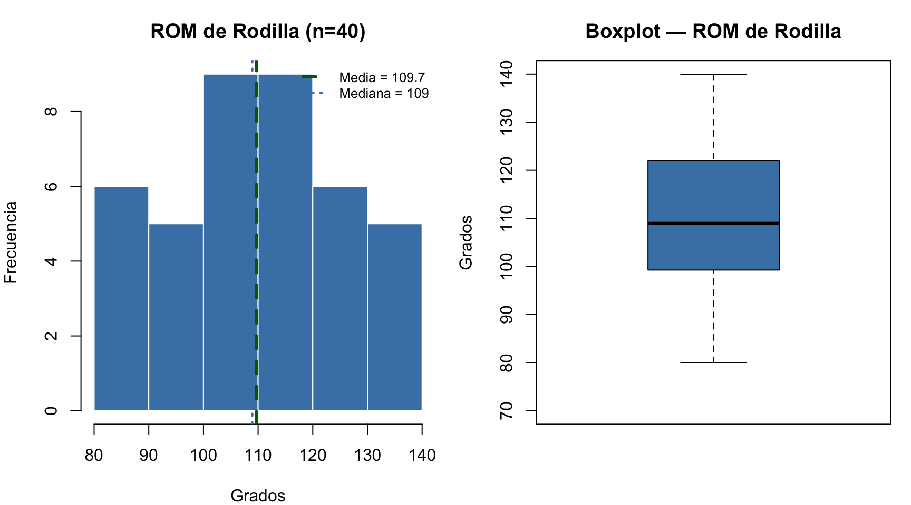
Nota
ROM de rodilla post-artroplastia (n=40):
La flexión media fue de 108.1 ± 14.5 grados (CV = 13.4%), con una mediana de 106.3 grados (RIQ: 95.7 – 120.0). La distribución fue aproximadamente simétrica (asimetría = 0.12). El test de Shapiro-Wilk (W = 0.982, P = 0.771) indica que los datos son compatibles con una distribución Normal.
Tip
Interpretación clínica: La muestra presenta una flexión media de rodilla adecuada para la fase post-artroplastia, con variabilidad moderada entre pacientes. La distribución simétrica y compatible con la Normal respalda el uso de métodos paramétricos (media ± DT) y de pruebas como el test t de Student para comparaciones futuras (Tema 4).
Importante
La descriptiva es el primer paso, no el último. Describe la muestra. Para llegar a la población necesitamos la inferencia.
El camino completo del análisis estadístico en fisioterapia:
| Etapa | Tema | ¿Qué responde? | Herramienta |
|---|---|---|---|
| Descriptiva | T1 | ¿Cómo son mis datos? | freq(), gráficos, \(\bar{x}\), \(s\) |
| Probabilidad | T2 | ¿Qué modelo siguen mis datos? | Normal, Binomial, Poisson |
| Estimación | T3 | ¿Entre qué valores está el parámetro? | IC, tamaño muestral |
| Contraste | T4 | ¿Es real esta diferencia? | Test t, P-valor |
| Asociación | T5-T6 | ¿Hay relación entre variables? | \(\chi^2\), regresión |
Tip
Ejemplo clínico — ROM de rodilla:
Tip
Resumen de conceptos clave:
| Concepto | Fórmula/Herramienta | Uso principal |
|---|---|---|
| Tipos de variables | Nominal, Ordinal, Discreta, Continua | Elegir análisis correcto |
| Tabla de frecuencias | \(n_i\), \(f_i\), \(N_i\) | Resumir distribución |
| Media | \(\bar{x} = \frac{\sum x_i}{n}\) | Tendencia central (cuantitativas) |
| Mediana | \(Me = x_{((n+1)/2)}\) | Tendencia central (robusta) |
| Varianza | \(s^2 = \frac{\sum(x_i - \bar{x})^2}{n-1}\) | Dispersión |
| CV | \(CV = s/\bar{x} \times 100\%\) | Dispersión relativa |
| RIQ | \(Q_3 - Q_1\) | Dispersión robusta |
| Asimetría | \(g_1\) | Forma de la distribución |
Referencias
Contexto: Un fisioterapeuta mide la flexión de rodilla en 8 pacientes: 112°, 118°, 125°, 122°, 130°, 128°, 119°, 126°.
Tip
Solución completa con R
x <- c(112, 118, 125, 122, 130, 128, 119, 126)
x_out <- c(x, 155)
par(mfrow=c(1,2), mar=c(4,4,3,1))
# Panel 1: Sin outlier
boxplot(x, main="Sin outlier (n=8)", col="steelblue", ylab="Grados", ylim=c(110,160))
stripchart(x, method="jitter", add=TRUE, pch=19, col="darkgreen", cex=1.2)
abline(h=mean(x), col="coral", lty=2, lwd=2.5)
abline(h=median(x), col="darkgreen", lty=1, lwd=2.5)
text(1, mean(x)+2, paste0("x̄=", round(mean(x),1)), col="coral", font=2)
text(1, median(x)-3, paste0("Me=", median(x)), col="darkgreen", font=2)
# Panel 2: Con outlier
boxplot(x_out, main="Con outlier 155° (n=9)", col="coral", ylab="", ylim=c(110,160))
stripchart(x_out, method="jitter", add=TRUE, pch=19, col="darkgreen", cex=1.2)
abline(h=mean(x_out), col="coral", lty=2, lwd=2.5)
abline(h=median(x_out), col="darkgreen", lty=1, lwd=2.5)
text(1, mean(x_out)+2, paste0("x̄=", round(mean(x_out),1)), col="coral", font=2)
text(1, median(x_out)-3, paste0("Me=", median(x_out)), col="darkgreen", font=2)
mtext("La mediana resiste outliers; la media NO", side=3, line=-1.5,
outer=TRUE, col="darkgreen", font=2, cex=0.9)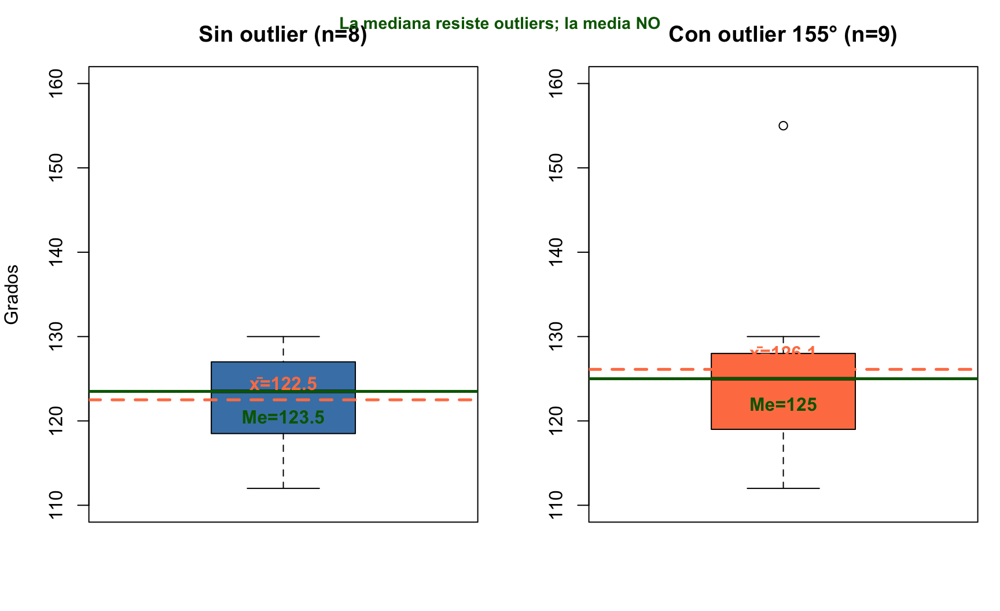
Clasificación de la variable: - Tipo: Cuantitativa (numérica) - Naturaleza: Continua (cualquier valor en un rango) - Escala: Razón (el 0° es absoluto, permite cocientes — 130° es el doble de 65°)
rom <- c(108.2, 107.5, 115.1, 112.3, 110.8, 109.5, 111.7, 113.4,
114.2, 106.9, 112.8, 113.1, 109.8, 111.2, 107.9, 108.5,
114.8, 110.2, 112.5, 113.9, 109.1, 111.4, 108.7, 110.5,
113.2, 112.1, 109.4, 110.9, 114.5, 111.8, 108.3, 113.7,
109.6, 112.7, 110.1, 113.5, 111.3, 114.1, 109.9, 112.4)
n <- length(rom) # Tamaño muestral
media <- mean(rom) # Media aritmética
mediana <- median(rom) # Mediana
varianza <- var(rom) # Varianza muestral (insesgada)
dt <- sd(rom) # Desviación típica
q1 <- quantile(rom, 0.25) # Primer cuartil
q3 <- quantile(rom, 0.75) # Tercer cuartil
riq <- IQR(rom) # Rango intercuartílico
cv <- dt / media * 100 # Coeficiente de variación (%)
# Asimetría y curtosis (requiere e1071)
library(e1071)
asimetria <- skewness(rom) # g1 ≈ 0 → simétrica
curtosis <- kurtosis(rom) # g2 (exceso ≈ 0 → mesocúrtica)# Histograma con curva normal
hist(rom, col = "steelblue", border = "white", freq = FALSE, breaks = 12)
curve(dnorm(x, mean(rom), sd(rom)), add = TRUE, col = "darkgreen", lwd = 2.5)
# Boxplot
boxplot(rom, col = "seagreen", horizontal = TRUE, main = "Boxplot")
# Q-Q plot
qqnorm(rom, col = "steelblue", pch = 19); qqline(rom, col = "coral", lwd = 2)
# Densidad
plot(density(rom), col = "steelblue", lwd = 2.5, main = "Densidad Kernel")
polygon(density(rom), col = rgb(0,0,0.5,0.15), border = "steelblue")
Bioestadística · Grado en Fisioterapia · UGR